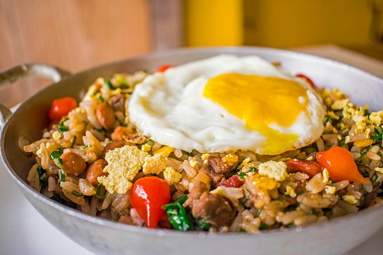

RECEITA - MEXIDINHO
INGREDIENTES
- 2 colheres (sopa) de azeite
- 1 cebola
- 2 dentes de alho
- 2 xícaras de arroz cozido (pronto)
- 1/2 xícara de coentro picado
- 3 linguiças finas
- 1 pimentão vermelho
- 1 colher (chá) de cominho
- 2 xícaras de feijao vermelho (pronto)
- 2 ovos fritos
MODO DE PREPARO
- 1. Em uma panela adicione o azeite, as linguiças fatiadas e a cebola em tiras e refogue.
- 2. Adicione o pimentão em tiras, o alho e tempere com cominho em pó.
- 3. Em seguida adicione o arroz e o feijão cozidos, mexa delicadamente.
- 4. Finalize com o ovo frito e o coentro.